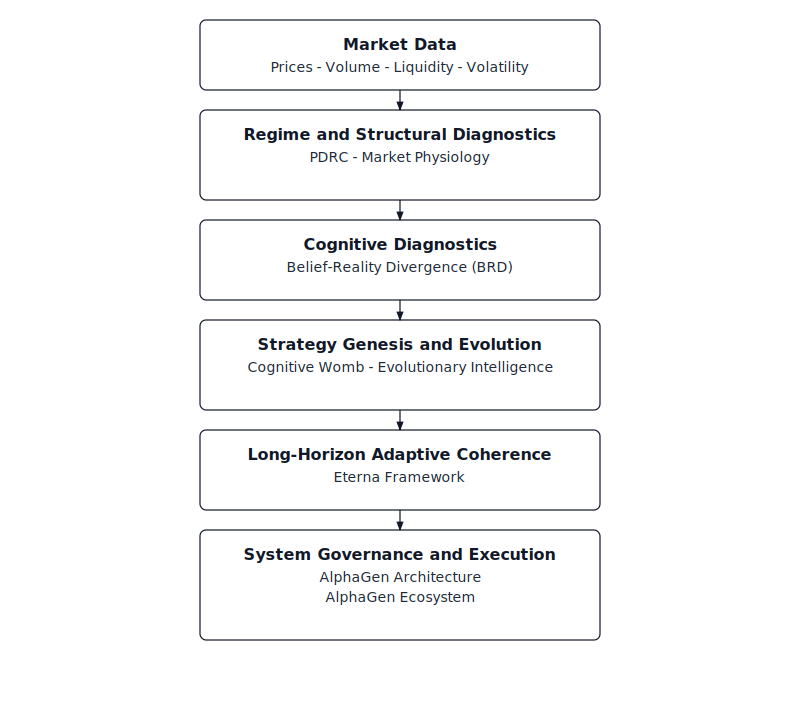

AlphaGen Institute for Cognitive & Quantitative Finance Research
Adaptive Finance. Audit-Grade Science.
AlphaGen advances the scientific study of financial markets through cognitive modeling, quantitative diagnostics, and regime-aware research frameworks.
About AlphaGen
The AlphaGen Institute is an independent research body dedicated to the study of financial markets as adaptive, non-stationary systems. Our work emphasizes diagnostic rigor, structural interpretability, and transparent modeling over performance-driven optimization.
Institutional Identity
AlphaGen operates independently of commercial execution incentives. Research outputs are designed to be auditable, reproducible, and suitable for peer inspection.
Research Focus
AlphaGen’s research treats markets as cognitive systems shaped by belief formation, feedback loops, and regime transitions rather than static statistical processes.
- Cognitive finance and belief–reality divergence
- Regime diagnostics and market stability analysis
- Adaptive quantitative and algorithmic systems
- Audit-grade modeling and reproducibility standards
Research Architecture
AlphaGen develops a small number of tightly scoped, foundational research frameworks that define its approach to adaptive finance, cognitive markets, and audit-grade diagnostics.
Manifesto & Standards
- Transparency over opacity
- Structure over curve-fitting
- Diagnostics over blind optimization
- Reproducibility over performance claims
AlphaGen research is designed for reviewer-centric validation, with explicit assumptions, documented failure modes, and reproducible artifacts.
Research Programs & Outputs
AlphaGen’s research outputs are organized as a vertically integrated framework stack spanning regime diagnostics, cognitive instability, adaptive intelligence, and long-horizon system coherence. Each paper is associated with a dedicated artifact anchor to support inspection and reproducibility.
Program I — AlphaGen: An Adaptive Algorithmic Trading Ecosystem
System-level research integrating regime diagnostics, cognitive finance, adaptive intelligence, and execution governance into a unified, audit-grade architecture.
-
AlphaGen: An Adaptive Algorithmic Trading Ecosystem
SSRN Working Paper
Paper: SSRN | Artifacts: GitHub -
AlphaGen: A Layered Architecture for Autonomous Regime-Aware Strategy Evolution
Patent-aligned architectural disclosure
SSRN Working Paper (Preliminary Upload)
Artifacts: GitHub
Architectural disclosures in Program I are provided for technical enablement and system clarity and do not define, expand, or limit underlying patent claims.
Program II — Regime Diagnostics & Market Stability
Deterministic, interpretable diagnostic frameworks for identifying market regimes, structural stress, and regime compression.
-
Parameter-Dominance Regime Classification (PDRC)
Empirical state-based regime diagnostic framework
Artifacts: GitHub -
Market Physiology under Regime Compression
Evidence from a Controlled Adaptive Trading System
SSRN Working Paper (Preliminary Upload)
Artifacts: GitHub
Program III — Cognitive Diagnostics & Belief Instability
Cognitive finance frameworks diagnosing belief formation, divergence, and instability conditional on regime structure.
-
Belief–Reality Divergence and Market Regime Stability
SSRN Working Paper (Preliminary Upload)
Artifacts: GitHub -
Cognitive Womb: A Multi-Layer Evolutionary Framework for Market State Intelligence and Adaptive Strategy Genesis
IIF Conference Research Output
Artifacts: GitHub
Program IV — Evolutionary & Self-Adaptive Intelligence
Regime-conditioned evolutionary intelligence governing strategy adaptation and population dynamics.
-
Evolutionary Market Intelligence Framework for Self-Adaptive Quantitative Systems
SSRN Working Paper
Paper: SSRN | Artifacts: GitHub
Program V — Eterna Framework (Long-Horizon Adaptive Coherence)
A stabilizing framework governing adaptive intelligence across regime paths, structural stress, and degeneration risk. Eterna ensures continuity, coherence, and bounded adaptation over time.
-
Eterna: A Regime-Constrained Framework for Adaptive Market Intelligence
SSRN Working Paper
Paper: SSRN | Artifacts: GitHub
Program VI — Architecture, Governance & Reproducibility
Structural standards ensuring that all AlphaGen research remains auditable, interpretable, and reviewer-centric.
- Artifact structuring conventions and versioning
- Deterministic experiment design and traceability
- Reproducibility and inspection-ready research pipelines
How to Read the AlphaGen Framework Stack
AlphaGen research is organized as a vertically ordered framework stack. Each layer answers a distinct scientific question and constrains the behavior of layers above it.
- Regime Diagnostics identify the current structural market state using deterministic, interpretable measurements.
- Cognitive Diagnostics assess belief formation, divergence, and instability conditional on the identified regime.
- Evolutionary Intelligence governs strategy generation and adaptation subject to regime and cognitive constraints.
- Long-Horizon Coherence (Eterna) enforces stability, bounded adaptation, and structural continuity across regime paths.
Execution-level behavior is permitted only when all lower layers remain diagnostically valid. This design ensures that adaptation is constrained by structure, interpretation, and long-horizon coherence rather than short-term optimization.
AlphaGen Framework Map
AlphaGen research is structured as a vertically ordered framework stack. Regime diagnostics define market state, cognitive diagnostics measure instability, evolutionary mechanisms govern adaptation, and the Eterna Framework enforces long-horizon coherence. Execution is permitted only under validated diagnostic and structural constraints.
Research Collaboration & Institutional Inquiries
AlphaGen research is developed as a coherent, audit-grade framework stack intended for deep inspection, extension, and applied deployment in institutional settings.
Inquiries from quantitative research groups, institutional trading desks, academic labs, and applied research organizations are welcome where there is alignment around regime-aware diagnostics, controlled adaptation, and long-horizon system governance.
For research collaboration, technical discussion, or institutional review:
Institutional evaluation and collaboration pathways are outlined here.